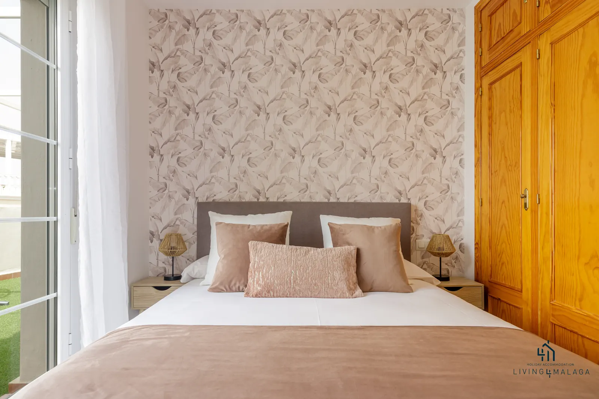
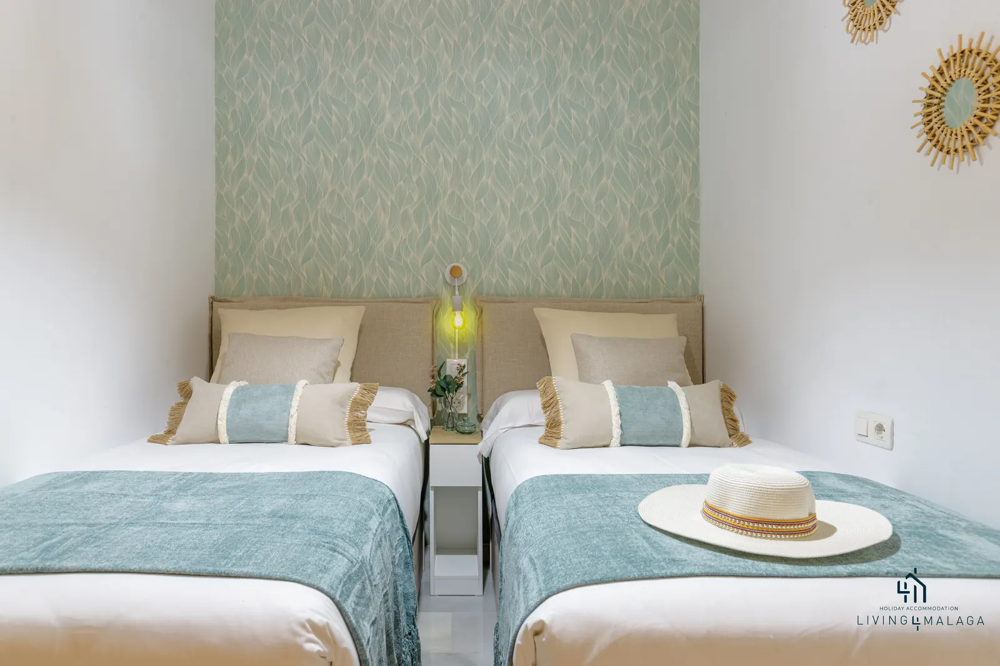

Urban Chic 2B
Room for the whole family
For six, with…
- two bedrooms and two bathrooms, one en suite;
- a sofa bed in the living room, on the second floor.
- 6 guests
- 2 bedrooms
- 2 bathrooms
- 4.68 · Airbnb · 41 reviews

Six old-town apartments for couples, families and groups of up to six
Holy Week 2027 in Málaga runs from Palm Sunday, 21 March, to Easter Sunday, 28 March. Urban Chic Apartments is at Calle Hoyo de Esparteros 9, facing the square of the same name. In 2026 the official route ran along Calle Atarazanas, the market street; Atarazanas Market is a 2-minute walk away, Calle Larios 6 minutes and Plaza de la Constitución, with the main grandstand, 9.
Best price guaranteed
You'll go to living4malaga.com, the management company's official website, to see prices and availability.
Maundy Thursday and Good Friday are public holidays across Andalusia.
| Day | Date in 2027 |
|---|---|
| Palm Sunday | 21 March |
| Holy Monday | 22 March |
| Holy Tuesday | 23 March |
| Holy Wednesday | 24 March |
| Maundy Thursday | 25 March, public holiday |
| Good Friday | 26 March, public holiday |
| Holy Saturday | 27 March |
| Easter Sunday | 28 March |
Source: Andalusia's 2027 calendar of public holidays (Decree 84/2026). BOJA no. 84, 5 May 2026 (Spanish)
Two two-bedroom apartments with two bathrooms, and the penthouse, with three bedrooms and a private terrace. The building has a lift. All except the penthouse have a French balcony over the square.
Room for the whole family
For six, with…
Made for travelling with friends
For six, with…
Sunbathe without leaving home
For six, with…
One bedroom with a double bed and, in the living room, a double sofa bed for two more people. All three have a French balcony over the square.
Ideal for couples, 2 minutes from Atarazanas Market
For couples, with…
Málaga's old town on foot
For couples, with…
A comfortable base for longer stays
For couples, with…
In 2026 the official route ran from Plaza de la Constitución along Calle Larios, Martínez, Atarazanas and Torregorda to the Alameda Principal and Plaza de la Marina, then up Molina Lario to the cathedral. Walking minutes from Hoyo de Esparteros 9:
It's on Calle Atarazanas, where the official route passed on its way to the Alameda Principal.
The stretch of the route right after the main grandstand.
The official route's main grandstand.
In 2026, after Plaza de la Marina, the brotherhoods went up Molina Lario to the South Tower.
In 2026, from Holy Monday to Good Friday, the brotherhoods set out in the afternoon, from 15:00, and most returned to their church after midnight. The latest return was at 04:30, in the early hours between Holy Tuesday and Wednesday.
In 2026 the Alameda Principal, Plaza de la Marina, Paseo del Parque, Calle Córdoba and Calle Boquete del Muelle were closed to traffic from 15:00 on each procession day until the processions ended; from Holy Wednesday to Good Friday they did not reopen. The City Council recommended public transport.
Málaga-Centro Alameda station, on the C1 airport line, is 6 minutes away on foot. In 2026, during procession hours, the airport bus terminus moved to the north side of Avenida Manuel Agustín Heredia, between Calle San Lorenzo and the Alameda de Colón.
In 2026 the taxi ranks on Calle Atarazanas, Calle Puerta del Mar and Plaza de la Marina were out of use during processions.
In 2026 the council car parks stayed open 24 hours, but you couldn't drive out of the Camas car park, 4 minutes away, or Tejón y Rodríguez while processions were under way. The Avenida de Andalucía car park, 4 minutes away, was also open 24 hours and the plan set no such restriction for it.
Source: Málaga City Council's Holy Week 2026 Mobility Plan, with the Agrupación de Cofradías' official routes. The 2027 ones may change. Holy Week 2026 Mobility Plan (Spanish) · 2027 public holidays (BOJA, Spanish)






From Palm Sunday, 21 March, to Easter Sunday, 28 March 2027. Maundy Thursday and Good Friday, 25 and 26 March, are public holidays in Andalusia.
In 2026 it ran along Calle Atarazanas, the market street. Atarazanas Market is a 2-minute walk from Hoyo de Esparteros 9, Calle Larios is 6 minutes away, Plaza de la Constitución, with the main grandstand, 9, and the cathedral 9.
Hoyo de Esparteros does not appear in the official 2026 routes. That year the official route ran along Calle Atarazanas, the market street; the market is a 2-minute walk away. The 2027 routes may change.
Urban Chic 2B and Urban Chic 3B have two bedrooms, two bathrooms and a sofa bed, for six. The penthouse, Urban Penthouse Terrace, has three bedrooms, two bathrooms and a 15 m² private terrace with an awning. The building has a lift.
Urban Chic 1, 2A and 3A have one bedroom with a double bed and a French balcony over the square. 2A and 3A have an en-suite shower room; Urban Chic 1 has an open-plan kitchen. All three have a double sofa bed for two more people.
Yes, but in 2026 you couldn't drive out of the Camas car park, 4 minutes away, while processions were under way, and the Alameda Principal and other roads were closed. Centro Alameda station is 6 minutes away on foot.
On the official website. It carries no intermediary commissions; the difference varies by date.
Best price guaranteed on the official website. Check availability: